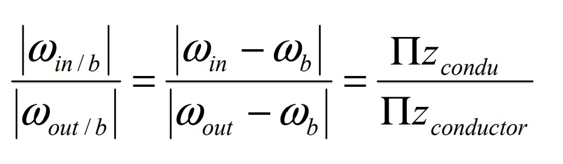

Mecánica Aplicada
Conceptos clave de cinemática, engranajes y equilibrio estático
Esta sección está pensada para ofrecer una visión clara y práctica de los temas fundamentales en mecánica, esenciales tanto en análisis como en diseño.
- 🔄 Cinemática vectorial: vectores de posición, velocidad y aceleración.
- ⚙️ Tren de engranajes: relaciones de transmisión, sentido de giro y reducción.
- ⚖️ Equilibrio de fuerzas y momentos: resolución de sistemas isostáticos en 2D y 3D.
1. Cinemática vectorial
La cinemática vectorial es la rama de la mecánica que estudia el movimiento de los cuerpos (velocidad, aceleración, trayectoria) sin tener en cuenta las fuerzas que lo producen, usando vectores para describir dicho movimiento en el espacio.
2. Tren de engranajes
Los trenes de engranajes son sistemas mecánicos que permiten transmitir movimiento y potencia entre ejes, modificando velocidad y par. Están compuestos por varios engranajes que pueden estar en contacto directo o unidos mediante engranajes intermedios (satélites o planetas).
- La fórmula de Willis permite calcular la relación de transmisión en trenes de engranajes complejos, especialmente aquellos que incluyen portadores móviles, como en trenes epicíclicos.
- Donde:
- ωin : velocidad angular del engranaje de entrada
- 𝜔out : velocidad angular del engranaje de salida
- 𝜔b: velocidad angular del portador (carro o brazo)
- Z: número de dientes
- ∏: producto de relaciones entre los engranajes conectados
Fórmula de Willis
3. Equilibrio de fuerzas y momentos
El equilibrio es una condición fundamental en mecánica estática donde un cuerpo permanece en reposo o en movimiento rectilíneo uniforme. Para que esto ocurra, deben cumplirse simultáneamente dos condiciones:
- Equilibrio de fuerzas: la suma de todas las fuerzas externas debe ser cero.
- Equilibrio de momentos: la suma de todos los momentos respecto a un punto debe ser cero.
Estas condiciones garantizan que el cuerpo no tenga movimiento traslacional ni rotacional.

∑F = 0

∑M = 0